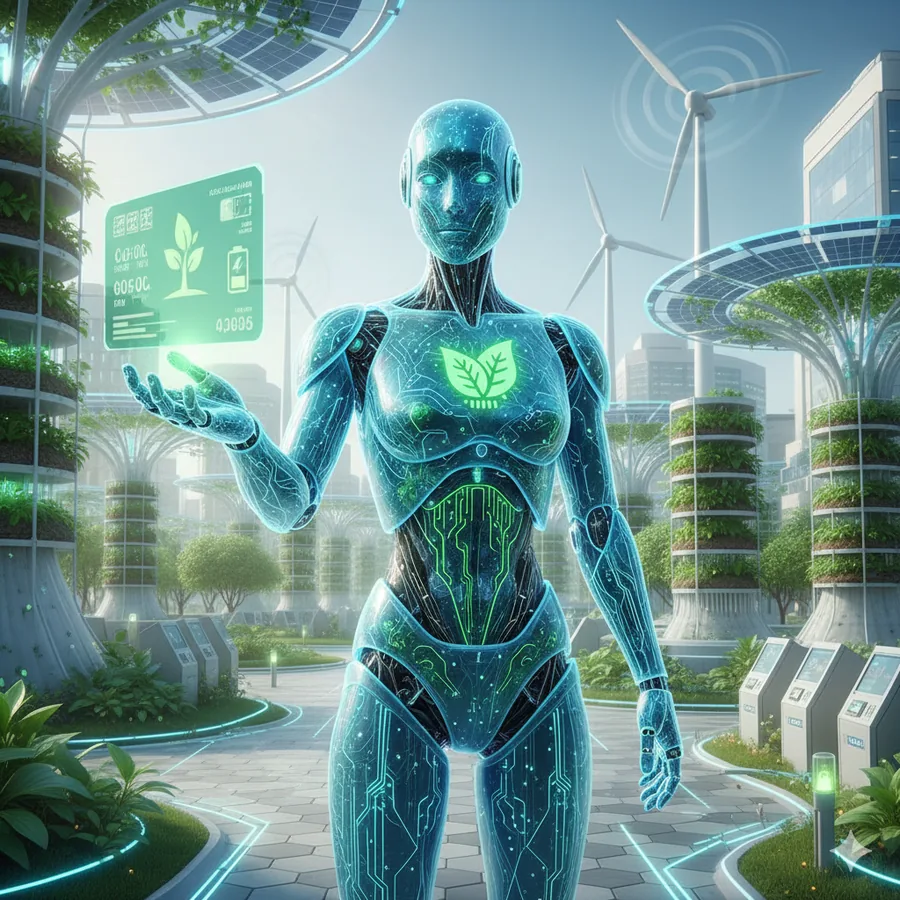

Agentic AI for Sustainability
Sustainability reporting and decision support require pulling together scattered data and repeating the same multi-step analysis by hand.
Built an agentic workflow that plans and executes multi-step sustainability tasks autonomously, calling tools and data sources as needed rather than following a fixed script.
Automates a multi-step analysis loop that previously required manual coordination across sources.